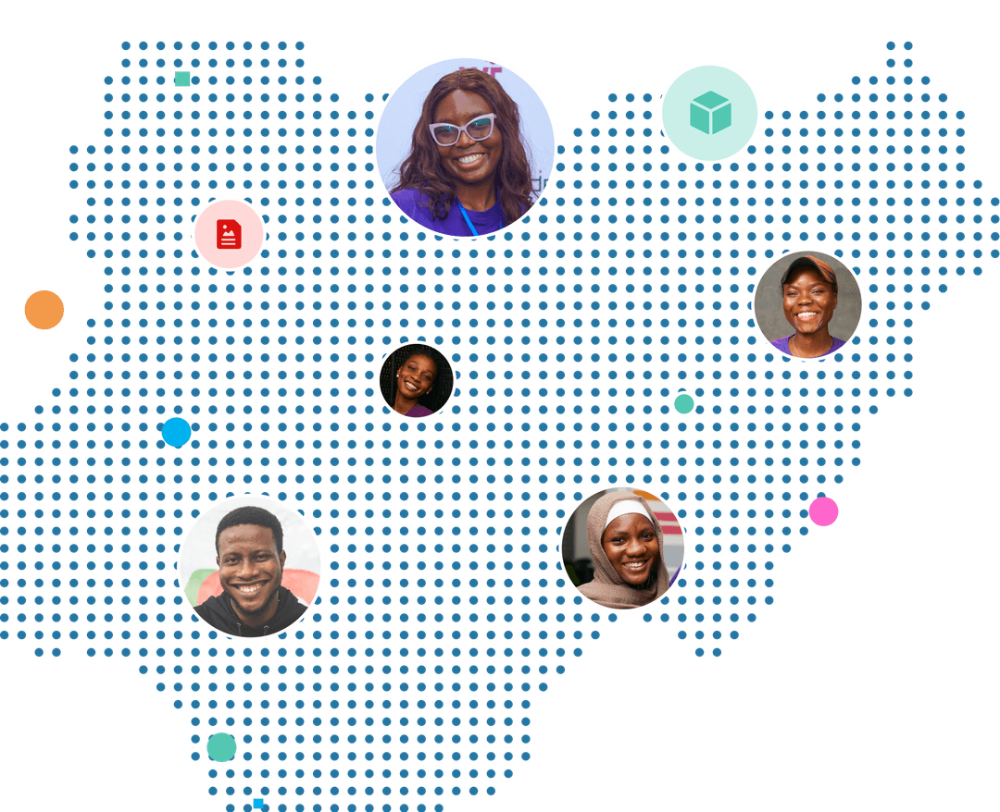
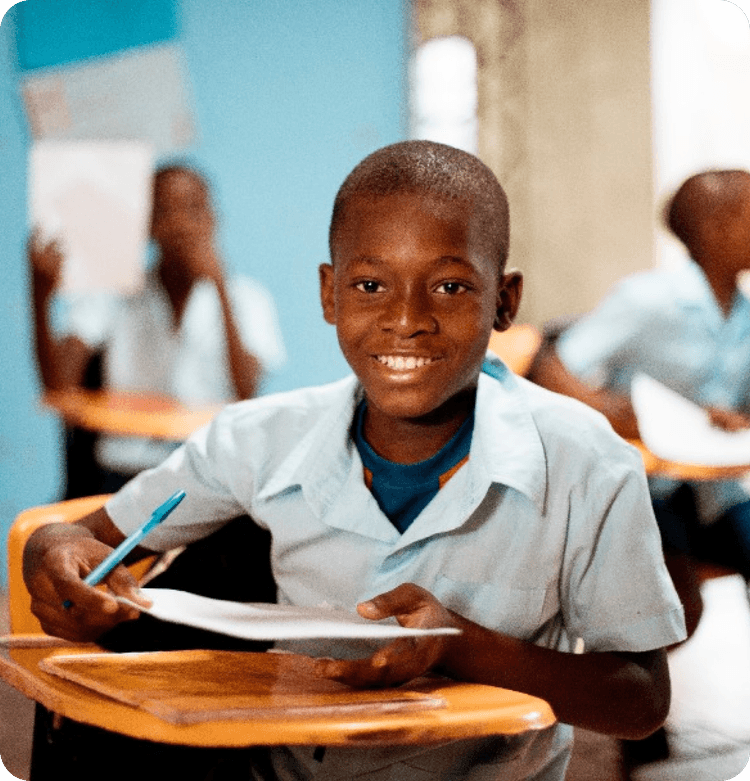
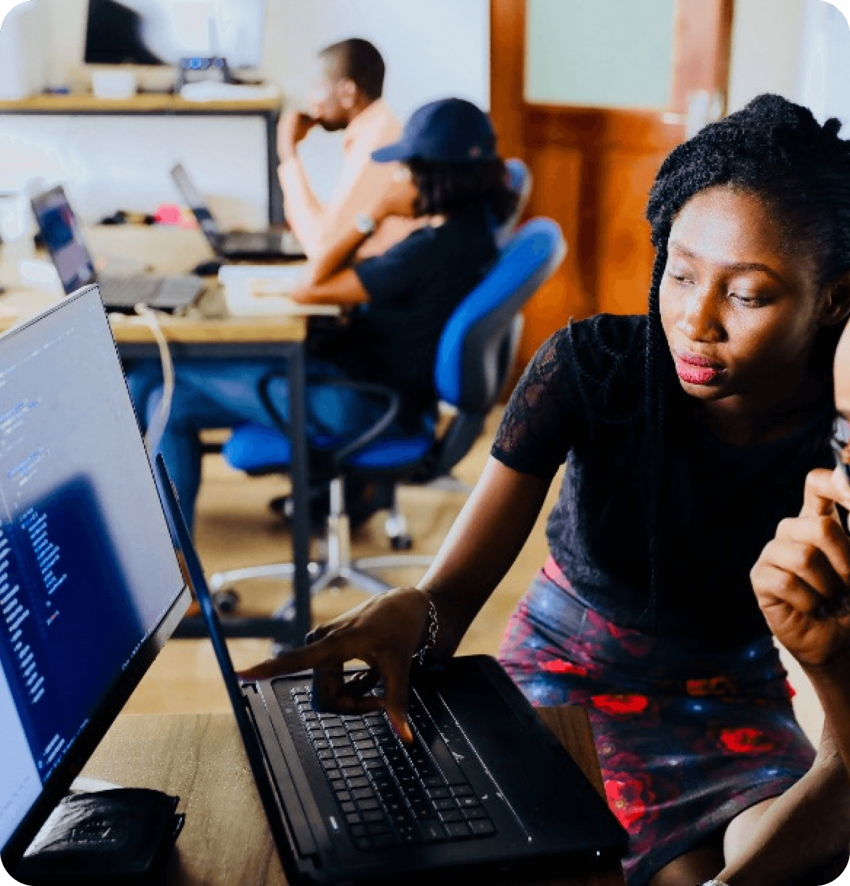

Welcome to the
Digital For All Challenge
We believe and are driven by the fact that every Nigerian desrves the right to digital literacy and skills for the future of work!

Supported By
- FCDO
- NITDA
- Ventures Park
- PRUNEDGE
Unlock the Future of Tech with Us!
Follow, Learn, and Innovate - Join our vibrant community across all social platforms.
Win exciting prizes
The challenge is back for its second year and is open to 3 categories of participants across Nigeria

Young Learners
Ages 12-18
- 10M Cash prize
- 7.5M consolation for 1st runner
- 5M consolation for 2nd runner

Youth Learners
Ages 19-25
Basic
- 10M Cash prize
- 7.5M consolation for 1st runner
- 5M consolation for 2nd runner
Intermediate
- 10M Cash prize
- 7.5M consolation for 1st runner
- 5M consolation for 2nd runner
Civil Servants
- 10M Cash prize
- 7.5M consolation for 1st runner
- 5M consolation for 2nd runner
Testimonial
We believe and are driven by the fact that every Nigerian deserves the right to digital literacy and skills fo rthe future of work!

Aina Jesulayomi
Software Engineering Track
My name Is Aina Jesulayomi, and I am from Ogun, Nigeria. After my convocation from the federal university of FUNAAB, I decided to look into digital trainings available online.